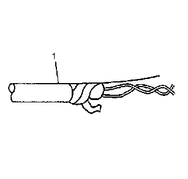
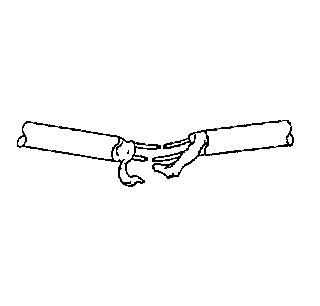
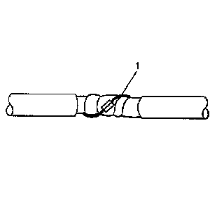
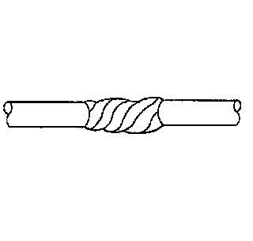

Splicing Twisted or Shielded Cable
SPLICING TWISTED OR SHIELDED CABLE
Twisted/shielded cable is used in order to protect wiring from electrical noise. Two-conductor cable of this construction is used between the radio and the Delco-Bose(R) speaker/amplifier units and other applications where low level, sensitive signals must be carried. Follow the instructions below in order to repair the twisted/shielded cable.

1. Remove the outer jacket (1). Use care not to cut into the drain wire of the Mylar tape.
2. Unwrap the tape. Do not remove the tape. Use the tape in order to rewrap the twisted conductors after the splice is made.

3. Prepare the splice. Untwist the conductors and follow the splicing instructions for copper wire. Staggering the splices by 65 mm (2.5 in) is recommended.

4. Re-assemble the cable.
IMPORTANT: Apply the Mylar tape with the aluminum side inward. This ensures good electrical contact with the drain wire.
- Rewrap the conductors with the Mylar tape.
- Use caution not to wrap the drain wire in the tape (1).
- Follow the splicing instructions for copper wire and splice the drain wire.
- Wrap the drain wire around the conductors and tape with Mylar tape.

5. Tape over the entire cable. Use a winding motion when you apply the tape.